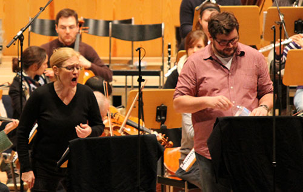
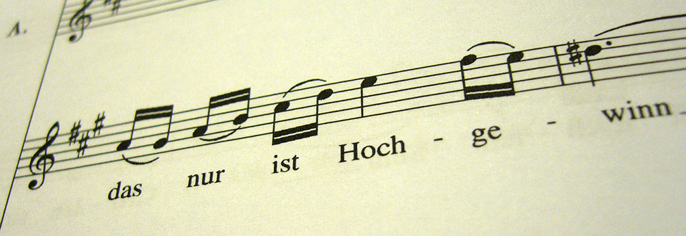
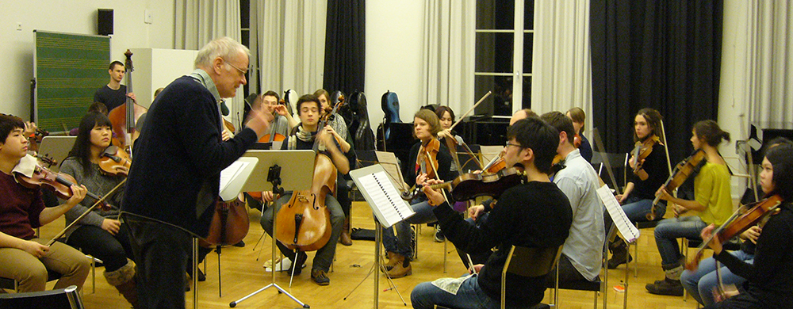
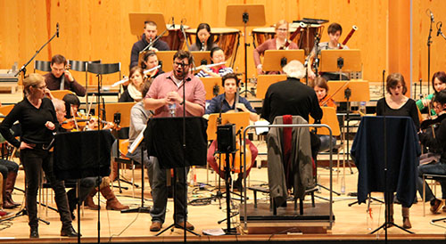
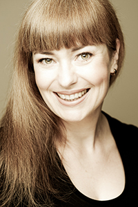
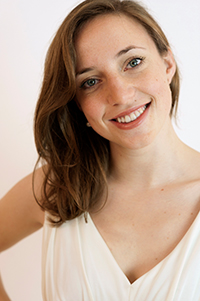
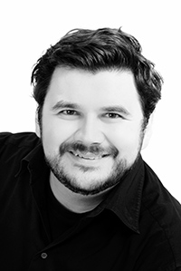

Hintergründe und Impressionen zur Aufnahme dreier Nummern des Freischütz an der HfM Detmold
Februar 2013
Voraussetzungen
Innerhalb des Arbeitspakets 2, das den sehr technisch klingenden Titel Aufbereitung akustischer Bestandteile trägt, sollen erstmals Tondokumente in eine digitale Musikedition integriert werden. Mehrere Aspekte sind bei diesem Vorgang innerhalb des Projekts von Bedeutung:
- die Synchronisation von Tonaufnahmen mit den Codierungen des Notentextes (was eine horizontale Segmentierung von Tonaufnahmen voraussetzt)
- die Nutzung vertikal segmentierter Aufnahmen (also in Einzelstimmen aufgespaltener Tondokumente) für eine spektrale Analyse historischer Tonaufnahmen
- die Demonstration des Nutzens solcher in Einzelstimmen aufgeteilten Aufnahmen bei einer Einbindung in digitale Editionen
- die akustische Veranschaulichung editorischer Entscheidungen bzw. die Untersuchung der Varianz bei der praktischen Umsetzung der Anweisungen eines Notentextes
Um diese Ziele zu verwirklichen, war von Anfang an in Kooperation mit der Hochschule für Musik in Detmold und den Tonmeistern des an der Hochschule angesiedelten Erich-Thienhaus-Instituts eine gezielt auf diese Bedingungen Rücksicht nehmende Einspielung ausgewählter Nummern des Freischütz geplant.
Die Auswahl dieser Nummern erfolgte einerseits im Hinblick auf eine möglichst große Vielfalt der musikalischer Faktur, andererseits sollten natürlich aus Kostengründen groß besetzte bzw. aufwändige Nummern vermieden werden. Reduzierte Besetzung und mannigfaltige Aufgaben bei der Klangtrennung gaben den Ausschlag bei der Festlegung folgender Nummern:
- Duett Nr. 6 Agathe/Ännchen: "Schelm! halt fest": Einem Modell Cherubinis folgend führt Weber hier zwei im Charakter gegensätzliche Melodien zusammen, deren erste separat exponiert wird. Bei den colla parte geführten Orchesterstimmen gibt es feste Kombinationen, so dass gute Ansätze für eine spektrale Segmentierung bestehen.
- Arie der Agathe Nr. 8 "Wie nahte mir der Schlummer": Hier war es neben den häufigen horizontalen Wechseln der musikalischen Faktur und den teils diffizilen Verwebungen der Singstimme mit dem musikalischen Satz (etwa in dem Preghiera-artigen Teil) vor allem die Tatsache, dass es sich um eine Bravour-Nummer für Sopranistinnen handelt, die entsprechend häufig auch in historischen Aufnahmen vorliegt, so dass eine Fülle an Vergleichsmaterial zur Untersuchung von Varianzphänomenen, aber auch für die Versuche der Anwendung der vertikalen Klangtrennung zur Verfügung steht.
- Terzett Nr. 9 Agathe, Ännchen, Max: "Wie? Was? Entsetzen!": Drei große, in der musikalischen Struktur sehr stark differenzierte Abschnitte bestimmen dieses Terzett, das in den Singstimmen sowohl imitatorische als auch unterschiedlichste homophone Partien, aber ebenso etliche solistische Passagen aufweist sowie einige schwierig zu trennende Klangmischungen im Orchester enthält.
Selbstverständlich spielten für diese Auswahl auch spezifisch musikalische oder editorische Entscheidungen eine Rolle – in diesem Kontext wird jedoch vornehmlich der Aspekt der Funktion dieser Aufnahmen im Forschungsprojekt thematisiert.
Grossartiges Musizieren in solch einer Atmosphäre mit so tollen Leuten – ein echtes Geschenk.
Stefanie Krahnenfeld, Solosopran, Agathe
Vorbereitungen
Die Aufnahmen, die schließlich vom 15. bis 17. Februar 2013 im Konzerthaus der Hochschule für Musik Detmold stattfinden konnten, erforderten gründliche Vorbereitungen in mehrfacher Hinsicht:
- Eine Neuedition der drei Nummern des Freischütz war in Kooperation mit der Carl-Maria-von-WeberGesamtausgabe vorbereitet worden. Dabei waren nicht nur die Partitur, sondern auch die gesamten Orchesterstimmen herzustellen und kritisch zu revidieren. Nach der Fertigstellung von Partitur und Stimmen entstand zusätzlich eine Liste mit Fragen und Problemen bzw. Hinweisen auf Besonderheiten der Edition, die allen verantwortlich Beteiligten zugänglich gemacht wurde.
- Prof. Dr. Meinard Müller und sein Mitarbeiter Thomas Prätzlich hatten über die Detmolder Kollegen Kontakt zum Tonmeister-Institut der HfM Detmold aufgenommen. Prof. Bernhard Güttler und Prof. Michael Sandner erklärten sich freundlicherweise bereit, die Aufnahmen künstlerisch zu betreuen. Drei fortgeschrittene Tonmeisterstudenten sollten unter ihrer Aufsicht die Leitung der Aufnahmen übernehmen: Stefan Antonin (Nr. 6), Florian Bitzer (Nr. 8) und Matthias Kieslich (Nr. 9), weitere Kommilitonen unterstützten die Arbeiten. Da die Aufnahme im Hinblick auf die erwünschte vertikale Klangtrennung und die komplexe Mikrofonierung ausführliche Vorgespräche erforderte, wurde kurzfristig eine Exkursion der Tonmeister zu den International Audio-Labs nach Erlangen eingeplant, da dort auch die Techniken zur Weiterverarbeitung der Klangdokumente eingehender demonstriert werden konnten.
- Die künstlerische Leitung der Einstudierung übernahm dankenswerterweise Prof. Karl-Heinz Bloemeke, der an der HfM Detmold die Dirigierklasse leitet. In mehreren Treffen und Rücksprachen mit ihm, den Tonmeistern sowie mit dem Konzertmeister Volker Worlitzsch wurden Details der geplanten Aufnahme festgelegt. Volker Worlitzsch übernahm zudem die Aufgabe der Einrichtung der Streicherstimmen, wobei er interessante Lösungen für das Problem der häufigen langen Legato-Bögen Webers fand – Lösungen, die dann in der Einstudierung konkret erprobt werden konnten.
- Die zeitaufwändige Aufgabe der Organisation des Orchesters und der mitwirkenden Sänger sowie sämtliche logistischen Fragen hatte in enger Rücksprache mit Prof. Bloemeke Heidi Schafmeister übernommen, die sowohl am Musikwissenschaftlichen Seminar als auch an der Hochschule für Musik tätig ist und damit in idealer Weise den Ablauf des Ganzen koordinieren konnte.
Erste Sänger- und Streicherproben
Unter Leitung von Karl-Heinz Bloemeke fand am 15. Februar eine gemeinsame Klavierprobe der Gesangssolisten statt (Korrepetition: Hyun-Sook Kim). Dabei wirkten mit: Beate Krahnenfeld (Agathe), Kirsten Labonte (Ännchen) und Volker Hanisch (Max). In dieser Probe wurden zugleich eine Reihe offener Interpretationsfragen hinsichtlich der Gesangsstimmen geklärt, außerdem wurden Probleme der Appoggiatur-Praxis des frühen 19. Jahrhunderts behandelt.
Am Abend des 15. Februar fand von 19 bis 22 Uhr eine Streicherprobe unter Leitung von Volker Worlitzsch statt. Erfreulich rasch spielte sich das eigens für dieses Projekt gebildete Orchester "zusammen" und übte sich auch in der von Worlitzsch an einigen Stellen vorgeschlagenen spezifischen "überlappenden" Artikulation. Dank der durchdachten Einrichtung waren nur wenige klangliche Korrekturen notwendig und die Streicher gingen damit gut vorbereitet in die Hauptproben am kommenden Tag.
Da mach ich einen Plan... – "Spontaneität" am ersten Aufnahmetag
Der Morgen des ersten Aufnahmetags begann mit einer Hiobsbotschaft: Volker Hanisch, der die Rolle des Max übernommen hatte, musste bedauerlicherweise aufgrund eines in der Nacht vor dem Aufnahmetag eingetretenen familiären Trauerfalls die Aufnahme absagen. Alle Versuche, vor Ort oder in der Nähe einen Ersatz zu finden – noch dazu am Wochenende – scheiterten. Fieberhaftes Telefonieren brachte entweder Ratlosigkeit oder Absagen. Schließlich konnte die Sängerin der Agathe, Beate Krahnenfeld, nach zwei ebenfalls negativen Versuchen, einen Tenor am Braunschweiger Theater nennen, bei dem die Bemühungen zum Erfolg führten: Tobias Haaks. Er erklärte sich am Telefon erfreulicherweise spontan bereit, einzuspringen, so dass gegen Mittag das große Aufatmen einsetzen konnte. Der ursprünglich geplante Ablauf musste dadurch revidiert werden, die Aufnahme des Terzetts mit der Beteiligung des Max wurde auf den Sonntag verschoben.

Inzwischen waren die Proben unter Leitung von Prof. Bloemeke längst am Laufen, zunächst am Vormittag mit dem gesamten Orchester, dann ab Mittag mit den beiden weiblichen Hauptpartien. Nach einer Pause begannen dann gegen 15:00 Uhr die Aufnahmen der vorgezogenen Agathe-Arie mit Beate Krahnenfeld, später wurde nochmals mit Frau Krahnenfeld und Kristen Labonte (Ännchen) am Duett Nr. 6 gearbeitet, schließlich ein weiterer Teil der Agathen-Arie aufgenommen. Frau Krahnenfeld bewies dann eine unglaubliche Kondition, denn als man sich gegen 21:00 Uhr dem letzten Abschnitt der Arie näherte und die Fortsetzung eigentlich auf den kommenden Tag verlegen wollte, fragte – welche seltener Fall im musikalischen Alltag! – das Orchester, ob man nicht jetzt im "guten Schwunge dranbleiben" und auch das Ende der Arie noch aufnehmen sollte!? Da Frau Krahnenfeld dies bejahte, war nach kurzem Verschnaufen nach einer weiteren Dreiviertelstunde die gesamte Nummer "im Kasten"! Eine erstaunliche Leistung!
Tag 2 der Aufnahme – Klangexperimente und zufriedene Gesichter
Das Duett Agathes mit dem quirlig-lebendigen Ännchen von Kirsten Labonte stand am zweiten Tag auf der Aufnahmeliste. Waren es in der großen Agathe-Arie nur einige wenige Stellen gewesen, an denen die Abweichungen der Neuedition von den überlieferten Partiturausgaben klangliches Austarieren etwa von dynamisch unterschiedlich bezeichneten Orchestergruppen erforderten, so soll hier an einem kleinen Beispiel aus dem nun behandelten Duett illustriert werden, um welche Fragen es dabei ging:
Als Ännchen im Gespräch mit Agathe die Ursachen für das Herabfallen des Bildes von Urältervater Kuno beschreibt und den "Nagel" als Schuldigen ausmacht, singt sie u.a.: "sollt er [der Nagel] seinen Herrn nicht tragen? ließ ihn fall’n, war das nicht schlecht?". Zu diesem "fall’n" erklingt in den Streichern ein Akkordschlag, der in allen älteren Editionen durchgängig als "pizzicato" im "forte" gekennzeichnet ist (vgl. Abbildung, rechtes Beispiel). Weber gibt hier aber eine sehr viel differenzierte Bezeichnung: Die beiden Violinen spielen im "arco" und in der Grundlautstärke (piano) einen durch Strich akzentuierten D-Dur-Akkord, während nur die Bratschen und Celli/Bässe mit einem pizzicato (und laut) zu spielenden Grundton "d" bezeichnet sind (vgl. Abbildung, linkes Beispiel). Dadurch erhält der Klang etwas mehr an "Geräuschkomponente" und illustriert das "fall’n" in feinsinnigerer Weise als dies die Lösung späterer Editoren tut. Diese Klangmischung auszutarieren und später einmal mit der simplen pizzicato-Lösung zu kontrastieren, war eine der vielen kleinen Detailaufgaben der Einstudierung. Prompt wurde denn auch die traditionelle Lösung als die "viel langweiligere" empfunden. Sie können die Unterschiede beider Versionen im Bericht über den Abschluss der Produktion akustisch nachvollziehen.
Ähnliche Klangexperimente betrafen auch die Violinbegleitung in Ännchens Passage "Grillen sind mir böse Gäste", wo unterschiedliche Artikulationsformen ausprobiert werden konnten (Weber hat die Stelle als non legato notiert). Schließlich waren auch die Appoggiaturen ein Quell des Experimentierens und zeigten, dass der Notentext lebendiger wird, wenn man ihn weniger statisch auffasst. Der Mut zu eigenen kleinen Kadenzfloskeln fehlt leider in professionellen Aufnahmen völlig, daher wollten denn auch die jungen Künstler kein unbekanntes Neuland betreten, zumal die Edition hier keine Vorschläge lieferte – ein Ansinnen, das vielleicht in der Gesamtausgabe noch mit bedacht werden sollte.
Tobias Haaks fühlte sich in einer ersten Durchlaufprobe des Terzetts Nr. 9 bereits so wohl in dem Ensemble, dass rasch an Details gearbeitet werden konnte. Die Tatsache, dass Haaks den Max auf der Bühne bereits häufig verkörpert hatte, war offensichtlich den Aufnahmen so förderlich, dass es nur wenige Stellen gab, die ein häufigeres "Nachbohren" der Tonmeister erforderlich machten. Das Ganze lief so reibungslos, dass man schon fast eine Stunde vor dem offiziellen Abschluss um 21:00 Uhr die Aufnahme abschließen konnte.
Zufriedene Gesichter, nicht nur wegen des zeitigen Abschlusses, sondern auch wegen der tollen Atmosphäre, die bei dieser Aufnahme herrschte und für die sowohl die Sänger mit ihrem außergewöhnlichen Engagement und ihrem geduldigen Variieren oder Wiederholen verantwortlich waren, ebenso aber die Tonmeister mit ihren klaren Anweisungen und dem freundlichen Drängen zur optimalen Lösung, allen voran aber der Dirigent dieser Aufnahme, Prof. Karl-Heinz Bloemeke, der die mit viel Engagement und Ausdauer spielenden Orchestermusiker mit seiner angenehm entspannten Arbeitsweise und seinen häufig in amüsante Wortspiele gekleideten, gezielten Anweisungen in der Kürze der verfügbaren Zeit zu einem gemeinsam agierenden, homogenen Klangkörper zusammenführte.
Die Ergebnisse werden im Verlauf des Projekts auf dieser Website auch akustisch zur Verfügung stehen, sie werden dann auch direkt mit der digitalen Edition verknüpft, aber ebenso von Meinard Müller für die akustischen Versuche im Rahmen des Arbeitspakets 2 weiterverwendet.
Allen Beteiligten sei an dieser Stelle ein sehr herzliches Wort des Dankes für das großartige Engagement bei diesen Aufnahmen gesagt: den Sängerinnen Beate Krahnenfeld und Kirsten Labonte, dem spontan einspringenden Tenor Tobias Haaks, den Musikerinnen und Musikern des Orchesters, dem Konzertmeister Volker Worlitzsch und vor allem dem "Spiritus rector" des Ganzen, Prof. Karl-Heinz Bloemeke. Ebenso gilt unser Dank den Professoren Bernhard Güttler und Michael Sandner vom Erich-Thienhaus-Institut der HfM Detmold sowie den jeweiligen Aufnahmeleitern Stefan Antonin, Florian Bitzer und Matthias Kieslich, ferner etlichen hier nicht genannten Personen, die im Hintergrund zum Gelingen des Ganzen beitrugen. Ein herzliches Wort des Dankes auch an Heidi Schafmeister für die reibungslose Organisation des Ablaufs einschließlich der Sorge für das leibliche Wohl während der ganztägigen Aufnahmesitzungen!
Unser Dank gilt nicht zuletzt auch dem Rektor der HfM Detmold, Herrn Prof. Christian Martin Vogel, der von Anfang an ein offenes Ohr für das Anliegen des Projekts hatte und ohne dessen wohlwollende Unterstützung dieser Teil des Projekts nicht hätte verwirklicht werden können.
Die vergangenen Tage waren, trotz recht heftiger Anstrengung, ein wirklich wunderbares Erlebnis […] Zwischenzeitlich hatte ich fast das Gefühl, mit dem Komponisten selber in Kontakt zu sein.
Volker Worlitzsch, Konzertmeister bei der Aufnahme und Leiter der Streicherproben
Die beteiligten Musiker
Stefanie Krahnenfeld (Agathe)
Stefanie Krahnenfeld erhielt ihre Ausbildung an der Essener Folkwang Hochschule. Ein Stipendium des Deutschen Akademischen Austauschdienstes (DAAD) ermöglichte ihr ein zweijähriges Graduiertenstudium an der Manhattan School of Music in New York. In der Klasse von Frau Prof. Marlena Malas erhielt sie 1998 ihren Master of Music.
In New York war sie als Mitglied des Opernstudios u.a. als Violetta in Verdis La Traviata sowie als Ginevra in Händels Ariodante zu hören und trat in Konzerten neben Künstlern wie Marilyn Horne, Ruth Ann Swenson und Warren Jones auf.
Ein Stipendium des Israel Vocal Arts Institutes führte sie nach Tel Aviv, wo sie als Konstanze in Mozarts Entführung aus dem Serail und als Armida in Händels Rinaldo zu hören war.
Stefanie Krahnenfeld erhielt den 3. Preis beim ARD-Wettbewerb 2000.
Die Sopranistin war 13 Jahre Ensemblemitglied des Saarländischen Staatstheaters Saarbrücken. Zu ihrem Repertoire zählen Partien wie Nedda (Pagliacci), Lucia (Lucia di Lammermoor), Norma (Norma), Liu (Turandot), Desdemona (Otello), Olympia/Antonia/Giulietta (Contes D’Hoffmann), Mimi/Musetta (La Boheme), Contessa (Figaro), Donna Anna (Don Giovanni), Fiordiligi (Cosi fan tutte), Cleopatra (Giulio Cesare), Hanna Glawari (Lustige Witwe). Gastverträge hat die Künstlerin mit dem Staatstheater Stuttgart und der Komischen Oper Berlin, dem Staatstheater Braunschweig, dem Theater Dortmund. Bei den Bregenzer Festspielen 2001 und 2002 sang sie die Partie der Musetta/La Bohème, 2003 wirkt sie in der Produktion Schlaues Füchslein mit. In London sang sie im Frühjahr 2004 und 2006 in einer Bohème-Produktion in der Royal Albert Hall die Musetta. Es folgten weitere Gastspiele als Infanta in der Produktion Der Zwerg an der Opera North in Leeds und als Donna Anna beim Grange Park Festival, London 2005 sowie die Lucia am Grand Theatre de Tours in 2007. Am Theater Weimar sang sie 2009 die Nedda in Pagliacci. 2011 die Giulietta (Les Contes Hoffman) am Theater Koblenz sowie die Titelpartie in Offenbachs La Belle Helene am Theater Bielefeld.
Neben ihrer Bühnentätigkeit ist Stefanie Krahnenfeld eine gefragte Oratorien- und Konzertsängerin: sie war u.a. Gast des Royal Philharmonic Orchestra, der Bochumer Symphoniker, des Tschaikowsky Orchesters des Moskauer Rundfunks, der Kammerakademie Neuss, der Jungen Philharmonie Köln, des Sinfonieorchesters des Bayerischen Rundfunks, des Rundfunkorchesters des SWR, des RSO Saarbrücken und gab Liederabende in Deutschland, Israel, Italien, Kanada und den USA. Sie hat mit Regisseuren wie Francesca Zambello, Karoline Gruber, Richard Jones, David Pountney, Daniel Slater und mit folgenden Dirigenten zusammengearbeitet: Rudolf Barshai, Ulf Schirmer, Christoph Poppen, Olaf Henzold, Lothar Zagrosek, Vladimir Fedoseyev, David Parry, Will Humburg.
Im Wintersemester 2011 übernahm Stefanie Krahnenfeld einen Lehrauftrag an der Hochschule für Musik und Tanz Köln am Standort Wuppertal, wo sie im Rahmen Ihrer Lehrtätigkeit erfolgreiche Familienkonzerte entwickelt und mit Studenten des Bachelor of Education durchgeführt hat.
Im darauf folgenden Jahr kam eine Stelle als Lehrkraft für besondere Aufgaben im Fach Gesang an der Musikhochschule Detmold hinzu.
Im März 2013 wurde Stefanie Krahnenfeld als Professorin für Gesang an die Staatliche Hochschule für Musik und Darstellende Kunst Mannheim berufen.
(Info: Künstler)
Kirsten Labonte (Ännchen)
Die Sopranistin Kirsten Labonte, geboren 1986, besuchte das Landesmusikgymnasium Rheinland-Pfalz, welches sie 2006 mit dem Abitur abschloss. Ihr musikalischer Werdegang begann als 6-Jährige mit Klavierunterricht (u.a. bei Martin Stadtfeld), sie sang in renommierten Chören wie dem Landeskinderchor Rheinland-Pfalz und dem Kammerchor „Art of the Voice“, Montabaur, und wirkte schon parallel zu ihrer Schullaufbahn in den Opernproduktionen des „Koblenzer Jugendtheaters“ (2004 Die Zauberflöte, 2006 Figaros Hochzeit) mit.
Seit 2006 studierte Kirsten Labonte Gesang und Gesangspädagogik an der Hochschule für Musik Detmold bei Prof. Gerhild Romberger und übernahm im Laufe ihres Studiums zahlreiche Partien in Hochschulproduktionen wie Ida in Die Fledermaus, Cleopatra in Giulio Cesare in Egitto, Pamina in Die Zauberflöte und Susanne in Susannens Geheimnis. Im Juli 2011 legte sie ihre Diplom-Abschlussprüfung mit der Rolle der Gretel in Humperdincks Oper ab und wurde mit der Gesamtnote „sehr gut“ entlassen.
Fortführend studierte sie seit Oktober 2011 im Masterstudiengang „Liedgestaltung“ in der Klasse von Prof. Manuel Lange und hatte zuletzt im Juli 2012 als Gast in der Detmolder Hochschulproduktion Die lustigen Weiber von Windsor Frau Fluth verkörpert.
Ihre stimmliche Entwicklung liegt seit 2012 in den Händen der finnischen Sopranistin Eeva Tenkanen.
Weitere künstlerische Impulse erhielt Kirsten Labonte in Meisterkursen bei Axel Bauni, Ralf Gothóni, András Schiff und Peter Kooij.
Im November 2011 begann ihre Zusammenarbeit mit dem polnischen Pianisten Jarosław Kaliski als Lied-Duo. Nach der Erarbeitung verschiedenster Liedprogramme von Komponisten von Mozart über Strauss bis hin zu Szymanowski haben sie im Oktober 2012 am renommierten Hugo-Wolf-Wettbewerb in Stuttgart teilgenommen.
(Info: Künstler)
Tobias Haaks (Max)
Tobias Haaks begann seine Gesangskarriere schon im Kindesalter bei den Augsburger Domsingknaben. Sein Studium führte ihn an die Hochschule für Musik und Theater in München und die bayerische Theaterakademie im Prinzregententheater, wo er von Fenna Kuegel-Seifried, Helmut Deutsch und Christian Gerhaher unterrichtet wurde und sein Studium mit Auszeichnung abschloss. Er war Stipendiat des Wagner Verbandes München und der Stiftung Yehudi Menuhins Live Music Now. Er vertiefte seine Ausbildung in Meisterkursen bei Brigitte Fassbaender, Sena Jurinac und Rudolf Piernay.
Schon während des Studiums debütierte Tobias Haaks am Staatstheater am Gärtnerplatz als Caramello in Eine Nacht in Venedig und am Nationaltheater Mannheim als Gastone in La Traviata.
Seit 2008 ist Tobias Haaks Mitglied des Ensembles des Staatstheater Braunschweig. Dort interpretierte er unter anderem Partien wie Max in Der Freischütz, Hans in Die verkaufte Braut, Tamino in Die Zauberflöte, Steuermann in Der fliegende Holländer, Sinowij in Lady Macbeth von Mzensk, aber auch den Balduin in Wiener Blut, Symon in Der Bettelstudent und Alfred in Die Fledermaus.
2011 gab er ein hochgelobtes Debüt bei den Schweriner Schlossfestspielen wiederum als Max im Freischütz.
Auch im Konzertbereich ist Tobias Haaks rege tätig. So gestaltete er beim Herrenchiemsee Festival Haydns Jahreszeiten. Nicht nur singt er den Tenorpart in Mendelssohns Paulus und Elias, sondern auch in Dvoraks Stabat Mater oder Verdis Messa da Requiem. Liederabende mit Schuberts Die schöne Müllerin oder Liedern von Schumann, Strauss, Vaughan-Williams und Weill runden sein Repertoire ab.
(Info: Künstler)
Prof. Karl-Heinz Bloemeke (Gesamtleitung)
Karl-Heinz Bloemeke studierte an der Hochschule für Musik Detmold bei Prof. Martin Stephani und Prof. Gustav König und erweiterte seine Ausbildung durch Studien bei Hans Swarowsky (Wien) und Franco Ferrara (Rom).
Erste Engagements als Kapellmeister erhielt er an den Städtischen Bühnen Bielefeld und am Landestheater Coburg. Bereits mit 29 Jahren wurde er 1978 zum stellvertretenden Generalmusikdirektor an das Staatstheater Darmstadt berufen und war von 1981 bis 1985 in gleicher Funktion am Nationaltheater Mannheim tätig. 1985 erfolgte die Berufung zum Professor für das Fach "Dirigieren" an die Hochschule für Musik Detmold.
1987 wählte der Chor des Städtischen Musikvereins Gütersloh Karl-Heinz Bloemeke zu seinem künstlerischen Leiter.
Als Gastdirigent wirkte er an großen deutschen Opernhäusern wie der Staatsoper Hannover, der Oper Frankfurt und dem Staatstheater Karlsruhe. Konzertreisen führten ihn in das gesamte europäische Ausland sowie die USA. Von 1990 bis 1997 war er ständiger Dirigent an der Deutschen Oper am Rhein.
Seit 1991 ist Prof. Bloemeke Chefdirigent des Folkwang Kammerorchesters Essen und gleichzeitig ständiger Dirigent des Sinfonieorchesters Berlin. Eine regelmäßige Zusammenarbeit verbindet ihn überdies mit der Nordwestdeutschen Philharmonie und dem Orchester des Nationaltheaters Mannheim.
(Info: HfM Detmold)
Die Änderungen im Hinblick auf die damaligen Verzierungs-Gewohnheiten stellen eine Bereicherung für die Charakterisierung des Ännchens dar.
Kirsten Labonte, Sängerin des Ännchen
Mitwirkende im Orchester:
- Volker Worlitzsch (Konzertmeister bei der Aufnahme und Leiter der Streicherproben, früher 1. Konzertmeister beim NDR Hannover und Mitglied des Berliner Philharmonischen Orchesters unter Karajan)
- Wei-In Chen
- Muncheol Kim
- Sebastian Kuleschow
- Seyeon Lee
- Jonathan Misch
- Nadine Quiroz-Sanchez
- Yaltah Worlitzsch
1. Violinen:
- Makoto Aoki
- Alejandro Cienfuegos
- Karla Enriquez
- Constanze Nadler
- Elena Nicoletti
- Wei-Ching Wu
2. Violinen:
- Miriam Barth
- Miren de Diego
- Friedemann Jörns
- Sara Lopez
- Alba Moratilla
- Helina Nissi
Viole:
- Athanasios Bellos
- Leonard Loock
- Hugh McGregor
- Gereon Theis
- Jana Telgenbüscher
- Nicole Wiebe
Violoncelli:
- Nikolaus Franz
- Kilian Müller
- Farah Winning
Kontrabässe:
- Urankar Marusa (Flöte)
- Yue Xin (Flöte)
- Alexandra Hajdu (Oboe)
- Wei Shen Wu (Oboe)
- Soo Young Lee (Klarinette)
- Ruben Staub (Klarinette)
- Joachim Graf (Fagott)
- Mareen Mehnert (Fagott)
Holzbläser:
- Adam Gal (Horn)
- Francesa Mosca (Horn)
- Davide Citera (Horn)
- Mercé Bosch Sanefelix (Horn)
Blechbläser:
Sonstige Beteiligte und Organisation:
- Hyun-Sook Kim (Korrepetition)
- Heidi Schafmeister (Organisation)
- Benjamin Bohl (FreiDi, Organisation)
Beteiligte Tonmeister:
Leitung der Aufnahmen (Erich-Thienhaus-Institut der HfM Detmold):
- Prof. Bernhard Güttler
- Prof. Michael Sandner
Verantwortlich für die einzelnen Nummern:
- Stefan Antonin (Nr. 6)
- Florian Bitzer (Nr. 8)
- Matthias Kieslich (Nr. 9)